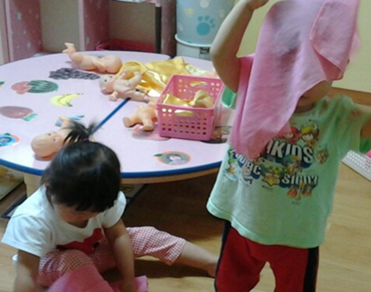
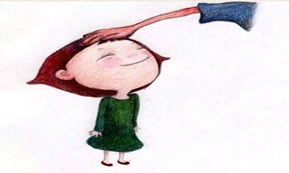

수줍어하는 아이들의 특성
수줍음이란 낯선 사람을 대할 때 자신을 제대로 표현하지 못하고 부끄러워하는 것을 의미한다. 아이가 낯선 사람을 보면 엄마 뒤로 숨고 머뭇거리거나, 말해야 할 때 안하려고 한다거나, 친구들에게 자신의 생각을 자연스럽게 표현하지 못하고 어울리는데 망설이는 행동으로 나타낸다.

수줍어하는 아이는 자주 다른 사람을 피하곤 하며 대부분의 일에 있어서 내성적이며 잘 나서려하지 않고 부끄러워한다. 부끄럼을 잘 타는 아이는 쉽게 화를 내고 다른 사람과의 친숙함이나 접촉을 회피하기 위해 혼자 있기를 원한다. 남을 성가시게 하거나 문제를 일으키는 일이 거의 없기 때문에 자주 눈에 띄지는 않는다.
아이가 수줍음을 타는 이유가 무엇인지, 지도는 어떻게 하고, 부모에게는 어떻게 조언해야 하는지 알아보고자 한다.
1) 사회적 기술로 상호작용 필요
수줍음이 많은 아이들은 때때로 사회 생활하는 기술이 부족하다. 다른 사람들로부터 오는 긍정적인 반응의 부족이나 경험하지 않음으로 인해 부끄럼을 타게 되는 악순환을 겪는다. 다른 사람들에게 흥미를 보이지도 않으며 상호 교류하지도 않으며, 공감하지도 관심을 보이지도 않는다.
2) 과잉보호 보다 다양한 경험의 시행착오
부모에 의해 과잉보호 받은 아이는 활동성이 적은편이고 의존적이다. 부모가 강압적이거나 다양한 시행착오 기회 부족 및 제한된 경험 때문에 조용하고 수동적이다. 즉, 부모의 과잉보호에 의해 아이는 의존적인 성향으로 성장한다. 이에 아이는 다른 사람에게 부끄럼을 타며, 어울리면서 상호 교류하는 방법에 혼란을 느끼기 때문이다.
3) 자기조절력과 독립성 강화
부모가 아이에 대한 관심과 보살핌을 충분히 하지 못하거나 자신의 부족을 공개적으로 수다를 떤다. 이로한 부모의 무관심은 보다 매우 소극적이며 소심하고 부끄러움을 많이 타는 성격을 형성한다. 아이의 발달 시기에 알맞은 자기 조절력과 독립심을 향상시켜 수줍어 하는 성향을 고서시켜줘야 한다.
4) 사회적 교류 방법의 자신감
아이가 또래 및 친구들에게 놀림 받고 조소를 당해본 경험이 있는 경우 쉽게 부끄럼을 탄다. 부모와 형제가 다른 사람에게 상처받기 쉬운 아이는 습관적으로 놀리기도 한다. 아이는 놀림 받는 것을 피하려고 사회에서 접촉을 피한다.
5) 부모의 양육 일치감 높이기
부모가 서로 다른 불일치한 양육법은 수줍음을 야기할 수 있다. 부모는 너무 완고하다가 너무 관대해지고 또는 매우 관심을 보이다 그리고 나선 무관심하게 되면 아이는 불안이 증가하여 무엇을 기대해야 할지 모르게 된다.
6) 비판보다 긍정적인 대화
부모가 주변 사람들에게 아이를 공개적으로 설명하거나 비판이 강할수록 아이는 위축되어 점점 소심하게 된다. 이러한 아이는 주변에서 부정적인 피드백을 받음으로서 당황하거나 자신감이 낮아져 불확실하고 수줍음을 타게 된다. 아이가 스스로 자신이 소중한 사람이라고 느낄 수 있도록 의견을 지지해주도록 한다.
7) 정서적 안정과 자기효능감
부모가 아이에게 벌을 주고 위협하여 공포와 불안감을 증가시킨 결과 소심한 성향이 된다. 반면, 주변의 귀여움을 받는 아이는 다른 사람에 의해 놀림 받게 되는 악순환을 겪는다. 소심한 아이의 경우 열등하다고 느끼기 때문에 다른 사람과의 접촉을 피하고 열등감이 발견되지 않을 수 있으므로 정서적 안정감과 자기효능감을 추구한다.

이러한 특성은 모임이나 집단은 아주 힘든 상황이다. 불안을 느끼는 의존적인 아동은 과감히 앞으로 나가고 다른 사람 앞에 드러날 만큼 안정감을 느끼지 못한다. 그러므로 아이에게 사람들과 어울리는 법을 가르쳐 주는 것이 중요하다. 사람들과 함께 하면서 겪게 된 다양한 상황에 대한 역할 놀이를 하면서 수줍음을 이겨 내고 자신감을 찾도록 도와주는 것이 중요하다.
2022.06.09 - [분류 전체보기] - 껌딱지처럼 의존하는 아이 - 다양한 시행착오로 자신감 갖도록
껌딱지처럼 의존하는 아이 - 다양한 시행착오로 자신감 갖도록
의존성 의의 및 행동 특성 아이는 12개월이 지나면 자아상이 생기고 스스로 하고 싶은 것들이 증가한다. 이 시기에 만들어진 자신감과 긍정적인 자아상에 의해 자립심이 형성된다. 아이들은 발
think-sis.co.kr
2022.03.16 - [분류 전체보기] - 발달 특성과 중요한 시기 - '세 살 버릇 여든 간다'
발달 특성과 중요한 시기 - '세 살 버릇 여든 간다'
인간발달 과정 중 ‘뱃속 10개월은 100년을 좌우한다.’, ‘세 살 버릇 여든까지 간다.’라는 속담이 있듯이 생의 초기는 아이의 전 생애 과정에 지대한 영향을 미친다. 문화가 발달하고 생활이
think-sis.co.kr